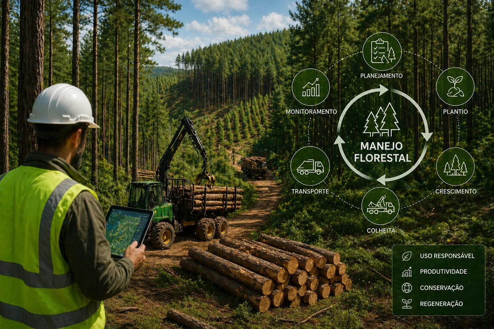

Planos de manejo
Estruturação técnica de uso, intervenção, conservação e organização da área.
A Avant conecta cartografia, relevo, logística e análise operacional para apoiar o planejamento de áreas produtivas, o microplanejamento e a execução florestal com mais inteligência.

O manejo florestal ganha precisão quando o planejamento deixa de ser apenas descritivo e passa a ser apoiado por dados espaciais e leitura técnica da área.
Estruturação técnica de uso, intervenção, conservação e organização da área.
Detalhamento operacional para orientar equipes, logística e execução em campo.
Leitura e planejamento da malha viária para suporte à operação e redução de risco.
Organização espacial de unidades operacionais com base cartográfica consistente.
Análise de declividade e comportamento do terreno para apoio ao planejamento.
Identificação de restrições e pontos críticos para aumentar previsibilidade.
Mapas e leitura territorial para melhorar tomada de decisão na fase operacional.
Base técnica para orientar execução, auditoria e avaliação espacial do plantio.
Consolidação de informações para priorização e estratégia de uso do território.
Produtos claros para equipes técnicas, supervisão e gestão.
Análises de suporte a projetos, regularização, manejo e gestão do risco ambiental.